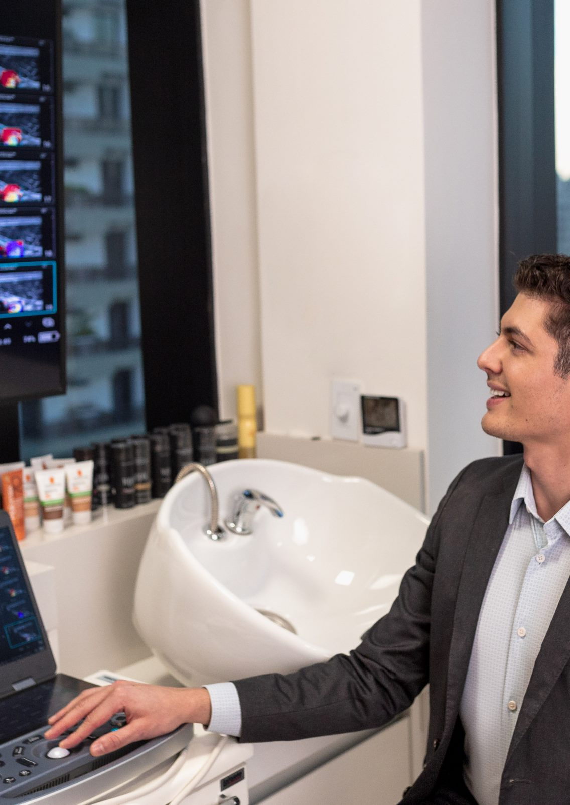

Ultrassom microfocado · Dermatologia
Quando o rosto começa a perder sustentação, o caminho não é preencher mais.
O Liftera é um ultrassom microfocado que leva energia térmica a camadas profundas da pele e estimula a produção de colágeno pelo seu próprio organismo. Sem cortes, sem internação e sem interromper a sua rotina.
Aqui, a indicação nunca vem antes da avaliação. Antes de qualquer aplicação, sua pele é examinada por um dermatologista com especialização em ultrassonografia de alta resolução — para que o tratamento seja escolhido a partir do que existe na sua face, e não a partir de um protocolo pronto.
Atendimento na Vila Clementino, São Paulo · Resposta pelo WhatsApp
Sinais de alerta
O que costuma trazer as pacientes até aqui
A flacidez raramente aparece de um dia para o outro. Ela se anuncia em detalhes que você percebe antes de qualquer outra pessoa, no espelho de manhã, na foto de lado, no contorno que já não é mais o mesmo.
-
Papada
Acúmulo e flacidez sob o queixo, que persistem mesmo quando o peso está estável.
-
Contorno mandibular perdendo definição
O famoso efeito buldogue: a linha da mandíbula deixa de ser reta e o tecido começa a acumular nas laterais do queixo.
-
Sensação de derretimento facial
O terço médio desce, as maçãs do rosto perdem projeção e o rosto parece mais pesado na parte de baixo.
-
Pele mais mole ao toque
Menos firmeza e menos elasticidade, especialmente nas bochechas e no pescoço.
-
Sulcos mais marcados em repouso
Linhas que antes só apareciam ao sorrir e agora permanecem quando o rosto está parado.
-
Pescoço e colo com flacidez
Pele mais fina e frouxa em uma região que costuma entregar a idade antes do rosto.
Reconhecer esses sinais não significa que você precisa de cirurgia. Significa que vale entender, com exame e critério, em que estágio a sua flacidez está — porque é isso que define qual tratamento faz sentido.


Entenda o tratamento
O que é o Liftera e por que ele age em profundidade
O Liftera é um equipamento de ultrassom microfocado registrado na Anvisa. Ele não preenche e não puxa a pele: entrega pontos precisos de energia térmica em camadas profundas do tecido, criando um estímulo controlado que faz o organismo responder produzindo colágeno novo ao longo das semanas seguintes.
-
Energia focada, não superficial
A energia atravessa a superfície da pele sem lesioná-la e se concentra apenas na profundidade programada. É por isso que o procedimento dispensa cortes e não exige afastamento das atividades.
-
Camadas que sustentam o rosto
O aparelho permite trabalhar em diferentes profundidades, incluindo o plano onde estão as estruturas responsáveis pela sustentação facial, a mesma região que a cirurgia plástica traciona.
-
Resultado construído pelo seu corpo
O que muda o aspecto da pele não é o aparelho: é o colágeno que o seu organismo produz em resposta ao estímulo. Por isso os efeitos são progressivos e aparecem ao longo de semanas, não no dia seguinte.
Como funciona
Como é a sua sessão: passo a passo
Do planejamento clínico ao acompanhamento pós-procedimento, cada etapa é desenhada para garantir segurança e resultados naturais baseados na sua anatomia única.
-
Consulta e exame
Avaliação dermatológica completa, com ultrassonografia de alta resolução da pele quando indicada, para medir espessura, qualidade do tecido e identificar o que existe na sua face — inclusive materiais de procedimentos anteriores.
-
Planejamento individual
Definição das áreas, das profundidades e do número de disparos a partir do que o exame mostrou. Se o Liftera não for o melhor caminho para o seu caso, você vai ouvir isso com clareza.
-
Aplicação
A sessão é realizada em consultório, com medidas de conforto discutidas com você antes de começar. A duração varia conforme as áreas tratadas.
-
Retorno e acompanhamento
Você volta às suas atividades no mesmo dia. O acompanhamento é feito ao longo dos meses seguintes, quando a resposta de colágeno se desenvolve.
Objetivos Clínicos
O que esperar do tratamento
Os resultados variam de pessoa para pessoa e dependem da idade, da qualidade da pele, do grau de flacidez e da resposta individual de cada organismo. De modo geral, o tratamento é indicado com os seguintes objetivos:
-
Melhora da firmeza da pele
Estímulo profundo que age diretamente na flacidez do rosto e do pescoço, devolvendo a densidade perdida.
-
Definição da linha da mandíbula
Tratamento focado no contorno facial para amenizar o aspecto de derretimento e redefinir os ângulos naturais.
-
Melhora do aspecto da papada
Redução da flacidez e compactação da área sob o queixo, melhorando a linha do perfil.
-
Sustentação do terço médio
Efeito de ancoragem que eleva as maçãs do rosto e suaviza os sulcos ao redor da boca.
-
Qualidade e textura da pele
Estímulo contínuo de colágeno que resulta em uma pele visivelmente mais viçosa, firme e uniforme ao toque.
-
Estratégia preventiva
Gerenciamento inteligente do envelhecimento para retardar a evolução da flacidez antes que ela se acentue.
Nenhum tratamento estético garante resultado. A resposta é individual e depende de avaliação médica prévia. Em casos de flacidez avançada, a indicação correta pode ser cirúrgica — e essa conversa é feita na consulta, com honestidade.
Atendimento Personalizado
Vamos avaliar o seu caso?
A consulta é o momento de entender o que está acontecendo com a sua pele, ver o exame junto com você e decidir, com base em evidências, se o Liftera é o tratamento certo para o seu rosto.
Agendamento seguro e rápido · Resposta em poucos minutos
Sobre o médico
Dr. Rômulo — Dermatologista
Graduado em Medicina pela Universidade Federal do Paraná e com residência médica em Dermatologia pela Escola Paulista de Medicina (UNIFESP), o Dr. Rômulo construiu sua trajetória na interseção entre a prática clínica e a pesquisa científica.
Sua especialização em ultrassonografia dermatológica pela UNIFESP mudou a forma como ele conduz a estética facial: em vez de tratar pelo que se vê na superfície, ele examina o que existe abaixo dela. Essa mesma linha orienta seu doutorado em Medicina Translacional pela UNIFESP, dedicado à influência do ácido hialurônico na estruturação facial, e sua atuação como preceptor do Ambulatório de Ultrassom de Pele e Complicações Estéticas da mesma universidade.
Atende no corpo clínico do Hospital Sírio-Libanês e na EviDenS Clinic, clínica que fundou e consolidou em São Paulo.
Formação e atuação
Trajetória acadêmica e profissional
-
Medicina
Universidade Federal do Paraná (UFPR)
-
Residência em Dermatologia
Escola Paulista de Medicina / UNIFESP
-
Especialização em Ultrassonografia Dermatológica
UNIFESP
-
Doutorando em Medicina Translacional
UNIFESP · linha de pesquisa: influência do ácido hialurônico na estruturação facial
-
Preceptor
Ambulatório de Ultrassom de Pele e Complicações Estéticas, UNIFESP
-
Corpo clínico
Hospital Sírio-Libanês
-
Pesquisa científica
Publicações, aulas e desenvolvimento de pesquisas com instituições como a AbbVie

Indicar um estimulador de colágeno sem saber o que existe na face é trabalhar no escuro. A ultrassonografia de alta resolução da pele permite ver, em tempo real, a espessura das camadas, a qualidade do tecido e a presença de materiais aplicados em procedimentos anteriores — informação que muda diretamente onde e como a energia deve ser entregue.
Quatro pilares (o que as pacientes mais elogiam):
-
Conhecimento técnico
Formação acadêmica ativa, pesquisa e ensino na universidade.
-
Explicação detalhada
Você entende o que tem, o que será feito e por quê, antes de decidir.
-
Segurança
Conduta baseada em exame de imagem e em literatura científica.
-
Acolhimento
Consulta sem pressa, sem venda de pacote e sem promessa de resultado.
O CONSULTÓRIO
Onde você será atendida
O atendimento acontece na EviDenS Clinic, na Rua Dr. Diogo de Faria, 1087 - conjuntos 901 a 904, na Vila Clementino, em São Paulo. Um espaço planejado para consultas sem pressa, com estrutura para exame de ultrassonografia de pele e realização de procedimentos no mesmo ambiente.
Rua Dr. Diogo de Faria, 1087 - conj. 901-904 · Vila Clementino, São Paulo/SP


DEPOIMENTOS
O que as pacientes relatam
5.0 ★★★★★ - Avaliações verificadas no Google
-

"A consulta foi muito tranquila. O doutor explicou cada etapa do exame e do tratamento com calma e clareza. Me senti segura desde o início."
Março, 2026 -
"Fiz a ultrassonografia de pele antes do procedimento e entendi exatamente o que seria feito. Gostei da abordagem baseada em evidências."
Fevereiro, 2026 -
"Ambiente acolhedor e atendimento sem pressa. Recebi todas as informações que precisava para tomar minha decisão com confiança."
Fevereiro, 2026
1. O Liftera dói?
A sensação mais comum é de calor e de pequenos pontos de desconforto durante os disparos, que passam assim que a aplicação termina. A tolerância varia bastante de pessoa para pessoa e também conforme a região tratada - áreas com menos tecido, como a testa e a linha da mandíbula, costumam ser mais sensíveis. Na consulta conversamos sobre as medidas de conforto disponíveis para o seu caso, e a aplicação é conduzida no seu ritmo.
2. Quais são os cuidados depois do procedimento?
O Liftera não exige afastamento das atividades: você sai do consultório e retoma sua rotina no mesmo dia. Pode haver vermelhidão leve, sensibilidade ao toque ou discreto inchaço nas primeiras horas ou dias. As orientações habituais envolvem fotoproteção rigorosa, hidratação da pele e evitar calor intenso e atividade física de alta intensidade nas primeiras 24 a 48 horas.
3. Em quanto tempo eu vejo o resultado?
O efeito do Liftera é progressivo, porque depende da produção de colágeno pelo seu próprio organismo. Algumas pacientes notam uma sensação inicial de firmeza logo nas primeiras semanas, mas o resultado se constrói ao longo de cerca de dois a três meses após a sessão, com evolução que pode continuar por mais tempo. É um tratamento para quem entende que o melhor resultado não é o mais imediato.
4. Quantas sessões eu vou precisar?
Não existe número padrão. Há casos em que uma sessão bem planejada é suficiente para o objetivo daquele ano; em outros, faz sentido repetir ou associar a outras tecnologias e tratamentos. O número de sessões é definido na consulta, depois da avaliação, e é sempre discutido com você antes de qualquer agendamento.
5. Quanto tempo dura o resultado?
Como o resultado vem do colágeno produzido pelo organismo, ele acompanha o processo natural de envelhecimento. Em média, fala-se em torno de um ano até que se considere uma nova sessão de manutenção, mas isso varia conforme idade, qualidade da pele, hábitos e resposta individual.
6. Quem não pode fazer Liftera?
Existem contraindicações - entre elas gestação, algumas condições de pele ativas na área a ser tratada, determinadas doenças e a presença de materiais implantados na região. Também há casos em que o grau de flacidez já ultrapassa o que um estimulador de colágeno consegue endereçar, e a indicação correta é outra. A avaliação médica existe exatamente para responder isso com segurança.
7. Posso fazer Liftera se já tenho preenchimento no rosto?
Essa é uma pergunta importante e a resposta depende de onde e o que foi aplicado. É justamente aqui que a ultrassonografia de alta resolução faz diferença: ela permite mapear o material presente na sua face antes da aplicação, para planejar as profundidades com segurança.
8. Qual o valor do tratamento?
O valor depende das áreas tratadas e do planejamento definido em consulta, e por isso é informado individualmente. Nossa equipe passa todas as condições pelo WhatsApp e a consulta de avaliação pode ser agendada pelo mesmo canal.
Sua avaliação pode começar hoje
Se você reconheceu no seu rosto os sinais descritos nesta página, o próximo passo é simples: uma conversa. Na consulta, sua pele é examinada, suas dúvidas são respondidas sem pressa e você sai sabendo exatamente quais são as opções — inclusive a de não tratar agora.
Agendamento seguro e rápido · Resposta em poucos minutos